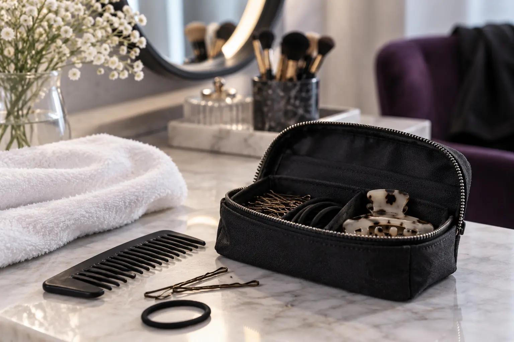

Prieš sušukavimą: kada plauti plaukus ir ką atsinešti?
Autorius: Madbeauty redakcija · Numatyta 2026 m. spalio 25 d. 10:00 (Lietuvos laiku)
Plovimo laikas priklauso nuo sutarto sušukavimo metodo. Sužinokite, ką pranešti apie naudotas priemones, kaip pasirinkti pavyzdžio nuotrauką ir kada verta atsinešti aksesuarą.

Prieš sušukavimą plaukus plaukite pagal paslaugą atliekančio specialisto nurodymus. Visoms šukuosenoms tinkamos vienos taisyklės nėra. Jei instrukcijos negavote, susisiekite prieš vizitą: praneškite, kada paskutinį kartą plovėte plaukus ir kokias priemones naudojote, ir paprašykite konkretaus nurodymo.
Plovimą derinkite prie sutarto darbo
Pasiruošimas priklauso nuo numatyto sušukavimo metodo ir to, kokios būklės plaukus specialistas prašo atsinešti. Nespėkite, kad privalote atvykti ką tik išplautais ar neplautais plaukais. Jei atsakymo dar neturite, žinutėje nurodykite, kada paskutinį kartą plovėte plaukus, ar jau juos formavote ir ką naudojote. Tada paprašykite jums skirtos instrukcijos.
Ką verta pranešti
Trumpai aprašykite norimą rezultatą, progą ir svarbiausią apribojimą. Paminėkite po plovimo naudotas priemones, pavyzdžiui, laką, putas, sausą šampūną, aliejų ar nenuplaunamą priemonę. Vien dėl to nekeiskite įprastos priežiūros rutinos: pasakykite, ką naudojote, ir laikykitės gautos pasiruošimo instrukcijos.
- Kokio rezultato norite ir kada jo reikia.
- Kada paskutinį kartą plovėte plaukus ir ar jau juos formavote.
- Kokias priemones naudojote po plovimo.
- Kurios pavyzdžio nuotraukos detalės jums svarbiausios ir ką norėtumėte pritaikyti.
Pavyzdžio nuotrauka ir aksesuarai
Pasirinkite vieną ar kelias nuotraukas, kuriose matyti norima forma, garbanos ar bangos arba plaukų susegimas. Nurodykite, kurios detalės jums svarbiausios, o kurios gali keistis. Jei norite šukuosenoje naudoti konkretų segtuką, lankelį, šydą ar galvos papuošalą, iš anksto aptarkite, ar verta jį atsinešti. Taip pat paminėkite, jei šukuosena turi derėti prie aprangos ar galvos apdangalo.
Žinutės pavyzdys
Galite pritaikyti tokią žinutę: „Planuoju [sušukavimo būdas]. Plaukus ploviau [kada], po to naudojau [priemonės]. Norėčiau [rezultatas], o svarbiausia man [detalė]. Ar prieš vizitą reikėtų juos išplauti dar kartą, ar palikti taip, kaip yra? Atsinešiu [aksesuarą].“ Įrašykite tik tai, kas jums aktualu. Priemones ar aksesuarus atsineškite, jei to prašo specialistas arba jų reikia norimam rezultatui parodyti.
Jei prieš vizitą naudojote daug karščio arba ilgai nešiojote stipriai suveržtą šukuoseną, paminėkite tai specialistui.
Amerikos dermatologų akademija nurodo, kad per didelis karštis ir ilgalaikis stiprus plaukų tempimas gali jiems pakenkti. Tai bendro pobūdžio informacija, o ne konkretaus sušukavimo instrukcija: dėl pasiruošimo vadovaukitės specialisto nurodymais. Daugiau apie plaukų formavimą ir plaukų pažeidimą.
Jei dar renkatės paslaugą, galite peržiūrėti nacionalinę kategoriją Šukavimas ir šukuosenos ir pasirinkti miestą. Kategorija nepatvirtina, kad jūsų mieste yra teikėjų ar laisvų laikų.
Planuojamos vidinės nuorodos
Šaltiniai peržiūrai
- AAD · formavimas ir plaukų pažeidimas — Perskaitytas AAD dokumentas: per didelis karštis ir ilgalaikis stiprus plaukų įtempimas gali kenkti; šlapių plaukų tvarkymo patarimai priklauso nuo tekstūros. Jokios universalios temperatūros, sekundžių, gydymo ar plaukų slinkimo diagnozės. Trumpai tik aktualiam saugos aspektui, iki20 žodžių; šukuosenų pasirinkimas nėra medicininė rekomendacija.
- Level 2 Hair Professionals handbook: consultation, cutting, styling and glossary — Read Unit203/204 factors, and glossary pp93–97: outline versus layered/graduated lengths, density/texture/growth, styling versus cutting. No single definition covers all bob/carré names; no guaranteed volume or maintenance result. This is published curriculum, not actual human stylist review.